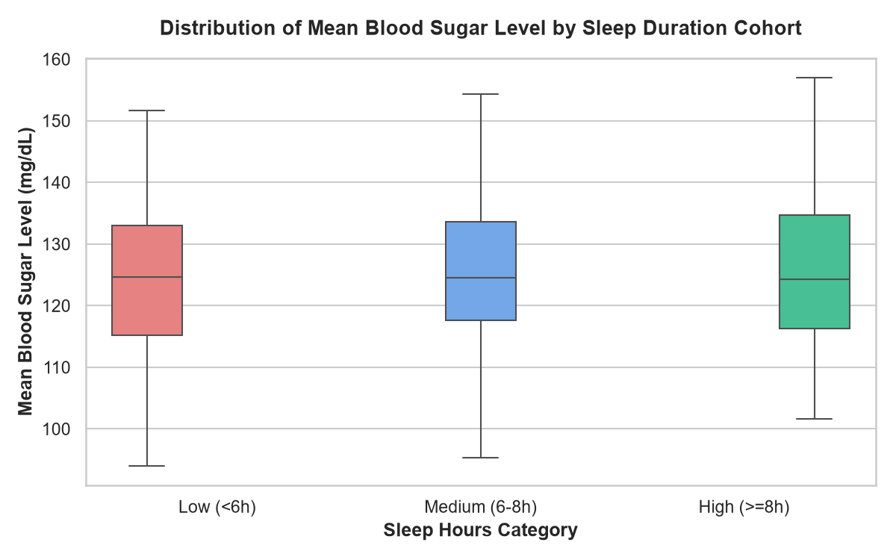

Machine Learning & Glycemic Forecaster
Simulate and forecast evening blood glucose levels, evaluate multivariate regression models, and review scientific hypothesis tests (ANOVA & Shapiro-Wilk).
Interactive Glycemic Predictor
Enter telemetry parameters to compute predicted evening glucose and risk index.
Projected Glycemic Control
Real-time machine learning inference
- Sleep Range Optimal: 7.5 hours provides healthy restorative rest for glycemic regulation.
- Evening Stability: Projected evening glucose remains comfortably within the target ADA range.
- Consider a light post-dinner 15-minute walk to enhance cellular glucose uptake.
"What-If" Sleep Duration Simulation Engine
Observe how shifting sleep duration from 4 to 10 hours changes projected metabolic impact across daytime glucose.
Linear Regression Model (OLS)
Mathematical modeling of Sleep Duration → Mean Blood Glucose.
The flat slope indicates that in this patient dataset, sleep duration operates within a well-stabilized range with minimal linear variance on baseline composite glucose.
One-Way ANOVA & Normality Tests
SciPy Statistical Hypothesis Validation (From analysis.py).
Conclusion: Since p = 0.5999 > 0.05, we fail to reject the null hypothesis. There is no statistically significant difference in mean blood sugar across sleep duration cohorts.
Live Python Engine (analysis.py) Runner
Execute the Python statistical script directly and inspect terminal execution and Seaborn boxplots.
